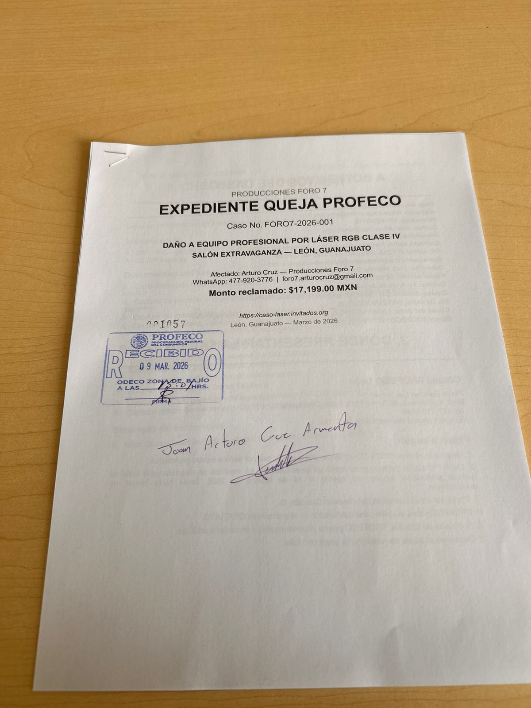

✓ Expediente presentado y recibido: El 9 de marzo de 2026 se acudió personalmente a la oficina
PROFECO ODECO Zona Bajío en León, Guanajuato. El expediente fue sellado y aceptado con
Folio 001057. Quedó constancia oficial de la queja.
⚠ Resolución de PROFECO: Los asesores indicaron que este tipo de casos
—daños y perjuicios a propiedad— no son de su competencia para resolver.
PROFECO puede recibir el expediente como constancia, pero la vía correcta para exigir el pago
es una demanda civil personal ante el Juzgado correspondiente.
El caso deberá continuarse por la vía civil.
📋 Comprobante: Sello PROFECO Recibido
Expediente sellado el 9 de marzo de 2026 — ODECO Zona Bajío · Folio 001057

🏠 Dónde ir: Oficina PROFECO Bajío — León
📍 Dirección: Plaza Galerías Las Torres, Blvd. Juan Alonso de Torres Pte. 1315,
Col. Jardines de Los Naranjos, León, Guanajuato. C.P. 37200
🕐 Horario: Lunes a viernes, 9:00 a 15:30 horas (no abre sábados ni domingos)
🌎 También puedes quejarte en línea:gob.mx/profeco (sección "Quéjate")
Consejo: Llama primero al 477 716 6044 para confirmar el horario y preguntar
si requieres cita previa. También puedes ir directo a la oficina durante el horario de atención.
📋 Paso a Paso: Qué Hacer al Llegar
1
Llega con tus documentos organizados
Trae todo en una carpeta, en orden. Lleva copias de todo (mínimo 2 juegos).
El original siempre quédate con él; entrega copias.
2
Pide el módulo de "quejas" o "captura de quejas"
Al entrar, indica que vienes a presentar una queja formal contra un establecimiento
por daño a propiedad. Te dirigirán con un asesor.
3
El asesor llenará un formato de queja contigo
Te pedirán datos del establecimiento (nombre, dirección, teléfono) y los tuyos.
Describe el problema claramente: "El equipo láser del salón dañó mi cámara profesional
durante un evento. Se les notificó formalmente por correo y WhatsApp sin obtener respuesta."
4
Entrega copias de toda tu evidencia
Entrega: carta formal, comprobante de compra, fotos del daño, capturas de WhatsApp
(que muestren el mensaje entregado sin respuesta), capturas de correos enviados. Guarda tus originales.
5
Guarda tu número de folio de queja ✓ (completado)
Folio asignado: 001057. PROFECO ODECO Zona Bajío, León. 9 de marzo de 2026.
⚠ Resultado real de la visita: PROFECO indicó que los daños y perjuicios a
propiedad de tercero no son de su competencia. La queja quedó registrada como
constancia (Folio 001057), pero la vía correcta para exigir el pago es la
demanda civil personal ante los Juzgados Civiles de León.
📂 Documentos que Debes Llevar
Lleva originales + 2 copias de cada documento. Los originales nunca los entregues.
Identificación
INE / Pasaporte vigente (original + 1 copia)
Documentos del caso (imprimir desde caso-laser.invitados.org)
Carta formal de reclamación enviada al salón el 18 de febrero de 2026 (2 copias)
Captura de pantalla del correo enviado a administracion@salonextravaganza.com (sin respuesta)
Captura de pantalla de WhatsApp ignorado (mensaje entregado sin respuesta)
Tarjeta de presentación del Salón Extravaganza
Evidencia del equipo dañado
Comprobante de compra Liverpool — $14,399 MXN (21 nov 2024)
Comprobante de pedido Liverpool #3330051311
Foto del sensor dañado (línea vertical blanca + líneas roja y azul)
Foto de la cámara DJI Osmo Pocket 3 física
Captura de la pantalla DJI mostrando "sin cobertura de reparación"
Captura del precio de reemplazo actual ($9,199 MXN en Liverpool)
Evidencia del incidente
Impresión de capturas del video (donde se ve el láser sobre la pista)
Impresión de captura del momento del daño (antes/después en el sensor)
USB o teléfono con el video del momento exacto del daño (opcional pero recomendado)
URL del sitio de evidencias: caso-laser.invitados.org (mencionarlo al asesor)
"El 14 de febrero de 2026 asistí como camarógrafo contratado a una quinceañera en el
Salón Extravaganza en León. El salón operó un láser RGB de 10 watts (Clase IV, la más peligrosa
según norma IEC 60825-1) cruzando la pista de baile a altura de personas, sin señalización ni
medidas de seguridad. El láser impactó el sensor de mi cámara DJI Osmo Pocket 3, causando
daño permanente e irreparable. DJI confirmó que no hay reparación disponible en México para
este modelo.
Le notifiqué formalmente al salón el 18 de febrero de 2026
por correo y entrega física. No obtuve respuesta a los correos, y no obtuve respuesta por WhatsApp
en WhatsApp. Solicito que PROFECO intervenga para que el salón me pague $17,199 pesos
por el reemplazo de la cámara ($9,199) y la afectación al servicio de video ($8,000)."
📜 Carta para Presentar ante PROFECO
Imprime esta carta y llévala. También la puedes adjuntar si presentas la queja en línea.
León, Guanajuato, a 26 de febrero de 2026
C. DELEGADO(A) REGIONAL
Procuraduría Federal del Consumidor (PROFECO) — Delegación Bajío
Plaza Galerías Las Torres, Blvd. Juan Alonso de Torres Pte. 1315
Col. Jardines de Los Naranjos, León, Guanajuato. C.P. 37200
ASUNTO: QUEJA FORMAL POR DAÑO A PROPIEDAD CAUSADO POR PROVEEDOR
Contra: Salón Extravaganza, León, Guanajuato
C. Delegado(a):
Por medio del presente escrito, yo, ARTURO CRUZ, con domicilio en León,
Guanajuato, y WhatsApp de contacto 477-920-3776, en mi carácter de
consumidor afectado, presento ante esta H. Procuraduría QUEJA FORMAL
contra el establecimiento denominado SALÓN EXTRAVAGANZA, con domicilio
en Blvd. Mariano Escobedo Ote. #4821, Cd. Satélite, 37407, León,
Guanajuato (Tel. 477 255 1093), con base en los siguientes:
HECHOS:
1. El día 14 de febrero de 2026, prestando mis servicios como camarógrafo
profesional en el evento "XV Años de Jade Ramos" celebrado en el
Salón Extravaganza, el equipo láser operado por dicho establecimiento
—identificado como YUER RGB 10W Clase IV, marca YUER (yuer-online.com),
modelo YROYLL10WRGB-XLR-RJ45-EU
(Rojo 3,000 mW / Verde 2,800 mW / Azul 4,200 mW)— dañó de forma permanente e irreparable el sensor
CMOS de mi cámara DJI Osmo Pocket 3 Creator Combo (No. serie:
5WTZM9C002CVXL), equipo adquirido en Liverpool el 21 de noviembre de
2024 por $14,399.00 MXN (Pedido #3330051311).
2. El equipo láser (Clase IV según norma IEC 60825-1, la categoría de mayor
peligro) fue operado cruzando la pista de baile a una altura de entre 1
y 3 metros, en zona de tránsito de asistentes, sin señalización, sin
zona de exclusión y sin operador certificado en seguridad láser.
3. El daño se manifiesta como línea vertical blanca permanente y dos líneas
horizontales (roja y azul) que aparecen en toda grabación y fotografía
realizada con el equipo, haciéndolo inservible para uso profesional.
DJI confirmó que no existe reparación de sensor disponible en México
para este modelo.
4. El 18 de febrero de 2026, notifiqué formalmente al Salón Extravaganza
mediante carta entregada físicamente en el establecimiento y enviada
por correo electrónico a administracion@salonextravaganza.com,
otorgando un plazo de 10 días hábiles (vencimiento: 4 marzo 2026).
5. El proveedor NO respondió ninguno de los correos enviados y, además,
procedió a BLOQUEAR mi número de WhatsApp, evidenciando su negativa
a resolver el caso de buena fe.
FUNDAMENTO LEGAL:
Ley Federal de Protección al Consumidor:
- Art. 1°: Protección de la vida, salud y seguridad del consumidor.
- Art. 7°: Obligación del proveedor de responder por la calidad e
idoneidad del servicio prestado.
- Art. 92 Bis: Responsabilidad del proveedor por daños causados al
consumidor por deficiencia en los servicios ofrecidos.
PRETENSIONES:
Solicito que esta H. Procuraduría:
1. Intervenga como conciliadora para que el Salón Extravaganza pague
la cantidad de $17,199.00 MXN (monto mínimo de acuerdo voluntario),
desglosado como sigue:
Concepto Monto
──────────────────────────────────────────────────────
Reemplazo DJI Osmo Pocket 3 $ 9,199.00
Afectación al servicio de video $ 8,000.00
──────────────────────────────────────────────────────
TOTAL $ 17,199.00 MXN
2. En caso de no llegar a acuerdo, se inicien los procedimientos
administrativos y/o de sanción que correspondan conforme a la LFPC.
Se adjunta como evidencia:
- Carta formal de reclamación (18 feb 2026)
- Comprobante de compra y pedido Liverpool
- Fotografías del sensor dañado
- Capturas de WhatsApp ignorado y correos sin respuesta
- Fotografías del láser operando sobre la pista durante el evento
- Evidencia completa en: http://caso-laser.invitados.org/
Protesto lo necesario.
_________________________________
Arturo Cruz
Producciones Foro 7
WhatsApp: 477-920-3776
León, Guanajuato, México
Fecha: 26 de febrero de 2026
🕐 Resultado y Siguientes Pasos
Acción
Estado
Resultado
Queja PROFECO
✓ Completada
Folio 001057 recibido el 9 mar 2026. PROFECO remite a demanda civil.
Denuncia Protección Civil
✓ Completada
Recibida y sellada el 11 mar 2026. Canalizada a Sector Salud.
Sector Salud
Pendiente
Canalización de Protección Civil para documentar riesgo sanitario/visual.
Mediación ante el CJA
En proceso
Primera visita: 13 mar 2026 — solicitaron factura. Carta Factura Liverpool obtenida el 18 mar 2026. Listo para regresar al CJA.
Demanda civil
Pendiente
Juzgados Civiles de León. Monto: $30,699 MXN. Escrito listo. Procede si el CJA no llega a acuerdo.
Expediente sólido: Contar con el folio de PROFECO y el sello de Protección Civil
como antecedentes fortalece tu posición en la demanda civil. El salón habrá ignorado dos
instituciones además de tu carta formal, lo que evidencia mala fe.
🗎 PDF Listo para Imprimir
Contiene todos los documentos, imágenes y evidencias organizadas para presentar en ventanilla.